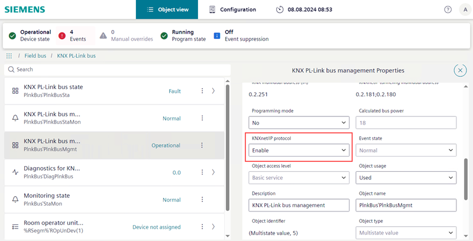

Enable/disable KNX/IP tunneling on DXR2 and PXC3
对于 DXR2 和 PXC3（V01.21.194.xxx 及更高版本）的固件，出于网络安全原因，默认情况下禁用“KNX/IP 隧道”功能。当 DXR 启动时，KNX/IP 协议被禁用。出于调试或诊断目的，它会在 Web 界面中暂时启用。下次 DXR2 重新启动时，KNX/IP 协议将再次禁用。
该功能位于Disabled设备自动重启的状态。 Enabling the KNX/IP tunneling in the offline engineering has no impact and is in the functionality will be inDisabled下载后状态。

建议在完成调试或诊断后禁用KNXnet/IP协议。
